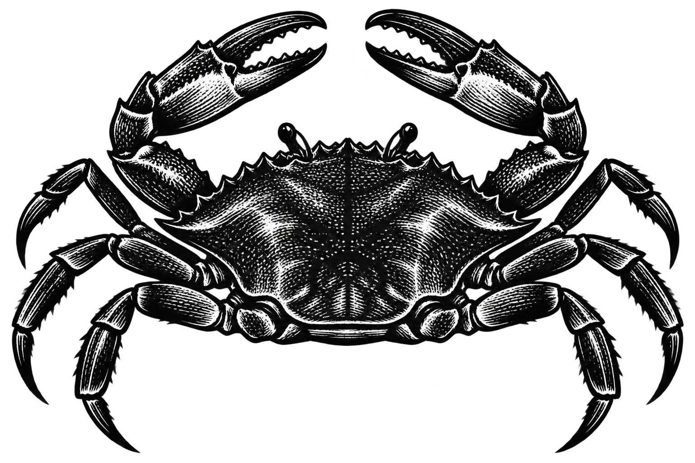
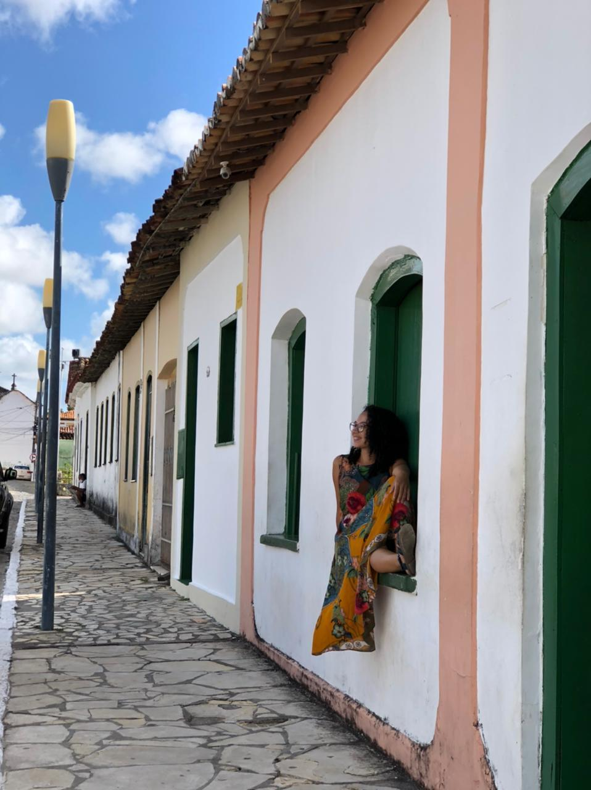

Primeiro, vamos ouvir Sergipe
Antes de querer turistar pelas ruas, rios e restaurantes, eu te peço uma coisa: escute a cena musical daqui. Esta playlist foi feita por uma amiga muito querida.
Abrir playlist39 experiências · o meu Sergipe
Quero te levar pelos rios, praias, serras, ateliês e conversas que me fazem voltar. Venha com tempo e curiosidade.
Venha comigoMeu jeito de olhar

Em Sergipe, descobri que o caminho também é destino. Eu me demoro na paisagem, chego perto dos detalhes e deixo uma história respirar antes da próxima.
Antes de tudo
Antes de querer turistar pelas ruas, rios e restaurantes, eu te peço uma coisa: escute a cena musical daqui. Esta playlist foi feita por uma amiga muito querida.
Abrir playlistProcure Mundo Negro, Vinicius Tavares, Sabrina Silva, Sônia Mellone, Nivaldo e tantos outros. Leia Ilma Fontes, passe pelo Ajuplay e descubra um Sergipe que está criando agora.
Mapa cultural de Aracaju
Em São Cristóvão, eu caminho sem pressa pelas casas e igrejas. Leio os painéis, entro nos museus, provo bricelets e queijadinha e ainda guardo tempo para os ateliês.
Do mangue à serra
Reuni aqui todos os passeios do meu roteiro. Abra um cartão, leia o que vivi ou anotei, encontre os contatos e siga para o mapa. O resto é seu caminho.
Um dia no centro
Eu sairia cedo, caminharia entre memória e arte contemporânea e deixaria o tototó para o pôr do sol.
Rolês culturais
Eu acompanho páginas, espaços e coletivos de Aracaju e Sergipe. Toda semana, Audevan e o Mangue Cultural também me ajudam a descobrir novos rolês.